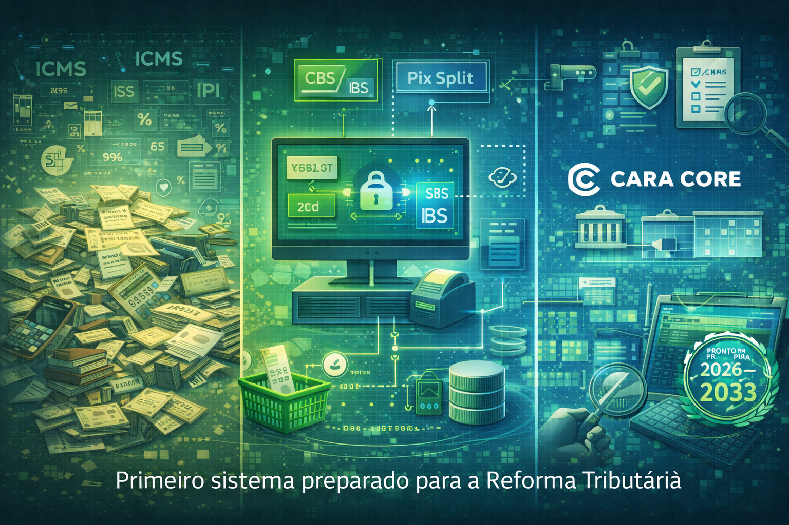

Por Dentro do CaraCore PDV: O Primeiro Sistema Preparado para a Reforma Tributária 2026–2033
Introdução: O Varejista no Meio do Labirinto
A reforma tributária brasileira (Lei 14.754/2023) desenha um novo regime entre 2026 e 2033: CBS (Contribuição sobre Bens e Serviços) e IBS (Imposto sobre Bens e Serviços) substituem uma penca de tributos federais e estaduais; o Pix ganha função de split de pagamento, repartindo o valor da venda entre lojista, intermediário e fisco. Para o varejista, a mudança não é opcional. Quem não se preparar fica preso ao caos antigo enquanto o resto do mercado já opera no novo.
O CaraCore PDV foi pensado desde o inÃcio para esse horizonte: não como atualização de última hora, mas como sistema que já nasce alinhado à lógica da reforma. Este artigo explica o cenário atual, o que muda com CBS/IBS e Pix Split, como a arquitetura do PDV suporta conformidade e auditoria, e por que estar pronto antes é vantagem real.
1. O Caos Tributário Atual
Hoje o varejo convive com ICMS estadual, PIS, COFINS, ISS (quando aplicável), regimes simplificados, substituição tributária, diferimentos e uma infinidade de alÃquotas e regras por estado e por atividade. O mesmo produto pode ter tratamento diferente conforme o destino; a mesma venda pode gerar obrigações em várias esferas. Sistemas legados foram construÃdos para esse mosaico: muitas tabelas, muitos parâmetros, muita manutenção. Qualquer alteração de lei vira projeto de TI.
O custo é operacional e de risco: erro de tributação gera multa e reclamação; retrabalho consome tempo do dono e do contador. O varejista que depende de planilha ou de PDV que "não entende" de imposto fica ainda mais exposto. A reforma não elimina a complexidade de um dia para o outro — há transição —, mas estabelece uma direção clara. Quem tiver sistema preparado para essa direção sai na frente.
2. O Que Muda com CBS e IBS
CBS (federal) e IBS (estadual e municipal) unificam a lógica: imposto sobre consumo, com crédito, em cascata. Na prática, o sistema precisa saber calcular o tributo devido por operação, registrar créditos e débitos e gerar a base para apuração e entrega à s autoridades. O varejista deixa de conciliar dezenas de regimes para passar a trabalhar com uma estrutura mais previsÃvel — desde que o software suporte.
No CaraCore PDV, a lógica de CBS/IBS está incorporada ao fluxo de venda: cada item, cada operação e cada movimento geram o registro adequado. O varejista não precisa "ajustar na mão" depois; o sistema já nasce preparado para o novo desenho. Isso reduz retrabalho, erro e exposição em auditoria.
3. Pix Split e Automação
O Pix não é só meio de pagamento. Na reforma, ganha papel de mecanismo de split: parte do valor da transação vai para o vendedor, parte para intermediários (adquirente, bandeira), parte para o fisco. O PDV precisa integrar-se a esse fluxo — enviar os dados corretos, receber a confirmação e manter rastreabilidade de quem recebeu o quê.
No CaraCore PDV, o Pix Split é tratado como parte da operação de venda: a automação garante que o valor seja repartido conforme as regras vigentes e que cada parte fique registrada. O operador do caixa não precisa calcular manualmente; o sistema faz a ponte com o ambiente de pagamento e com a exigência fiscal. O resultado é conformidade e menos atrito no dia a dia.
4. Arquitetura do PDV
O CaraCore PDV é aplicação desktop (Electron), com banco de dados local (SQLite). Os dados de vendas, estoque e configuração ficam na máquina do estabelecimento; não há dependência de nuvem para o núcleo da operação. Isso traz vantagens concretas para o varejista:
- Funcionamento offline: se a rede cair, o caixa continua vendendo. Sincronização e envio de dados fiscais podem ocorrer quando a conexão voltar.
- Controle local: o dono do negócio sabe onde estão os dados. Não fica à mercê de indisponibilidade de servidor de terceiros para abrir o PDV.
- Conformidade e performance: operações crÃticas (abertura de caixa, venda, fechamento) não dependem de latência de internet. O sistema responde rápido e previsÃvel.
A arquitetura foi escolhida para suportar a reforma tributária: cálculos e registros ocorrem no próprio PDV, com estrutura preparada para CBS/IBS e Pix Split, sem depender de módulo externo que "talvez" seja atualizado no futuro.
5. Auditoria e Segurança
Rastreabilidade é exigência legal e de gestão. O PDV precisa permitir que cada venda, cada movimento de estoque e cada informação tributária sejam auditáveis: quem fez, quando, com qual valor e em qual regime. O CaraCore PDV mantém esses registros de forma consistente, com dados armazenados localmente e protegidos. Em caso de fiscalização ou dúvida do contador, a base está organizada.
Segurança e LGPD andam juntos: dados de clientes e de transações ficam sob controle do estabelecimento; não há envio desnecessário para terceiros. A polÃtica é clara: o que é local permanece local, e o que precisa ser enviado (por exemplo, para autoridade fiscal) segue regra explÃcita. Isso reduz risco de vazamento e dá transparência ao titular dos dados.
6. Por Que Estar Pronto Antes Importa
Quem espera a reforma "pegar" para então correr atrás de sistema novo perde tempo e tranquilidade. O varejista que já opera com PDV preparado para 2026–2033 evita retrabalho de migração em cima da hora, reduz erro de tributação e consegue focar no negócio em vez de apagar incêndio fiscal.
Estar pronto antes também é vantagem competitiva: o cliente e o contador percebem que o estabelecimento leva a sério conformidade e planejamento. Em um mercado em que muitos ainda vão descobrir o problema na marra, quem já está alinhado se destaca.
Conclusão: PDV Como Base da Conformidade
O CaraCore PDV não é um PDV genérico com "módulo de reforma" encaixado depois. Foi desenhado para ser o primeiro sistema de ponto de venda preparado para a reforma tributária 2026–2033: CBS/IBS, Pix Split, arquitetura local e auditoria que o varejista e o fisco podem usar com confiança. O caos tributário atual tem data para ser substituÃdo por uma lógica mais clara; quem tiver a ferramenta certa desde já sai na frente.
Hashtags
Contato
- E-mail: suporte@caracore.com.br
- Site: www.caracore.com.br
- LinkedIn: Cara Core Informática
Conecte-se conosco no LinkedIn para mais conteúdos sobre PDV, reforma tributária e varejo.
Seguir no LinkedIn
Artigo publicado em 4 de abril de 2026
© 2026 Cara Core Informática. Todos os direitos reservados.